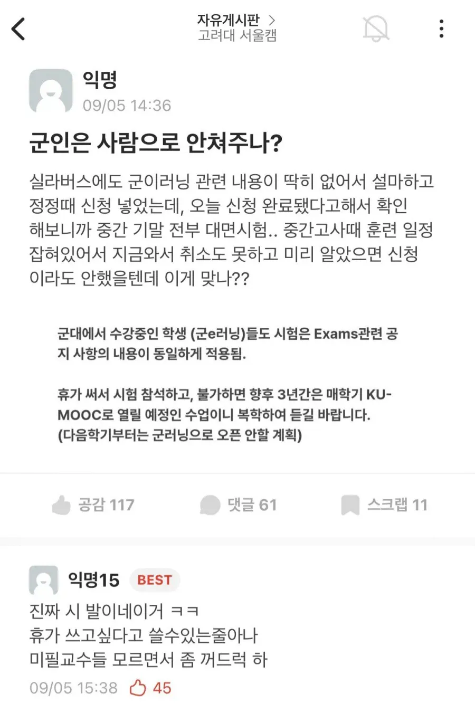

왜? 점점 더 힘들어져야 감히 사병놈들이 이 제도를 안 쓰지
군이러닝 이라는 단어를 오늘 처음 들었다 요즘은 군대다니면서 학점 챙길수있나보네
저것도 꽤 오래됐을 걸...
님이 90년대나 00년대 군대 갔다왔다면 뭐...
개드립이면 00년대 군번이 대부분일거라...
선택폭이나 학점 채우는거나 언럭키 계절학기 수준임
2007년부터 있었는데 대체 몇년도 군번인거야...
군인 불이익주면 국방부에서 사법고소를 진행시켜야지 정상화되는데 아무도 의지를 가진인간들이 없다 다 한탕하고 문제없기만 바래서
인도식 형벌이 필요하다
대체 왜저러는거야
나 대학생 때 예비군 갔는데 예비군은 결섭으로 처리 한대서
학생예비군, 국방부, 경찰, sbs 제보 한다하니까
그러라길래
제보했더니
다음날 조교가 잘못 알았다고 미안하다 하던데ㅋㅋㅋ
지가 고집 부리더니 조교를 팔더라
노예가 감히 말대꾸? 국가를 위해 헌신하지 마라 ㅋㅋ
국방부야 뭐 늘 쓰다버리는 소모품 취급하니까..